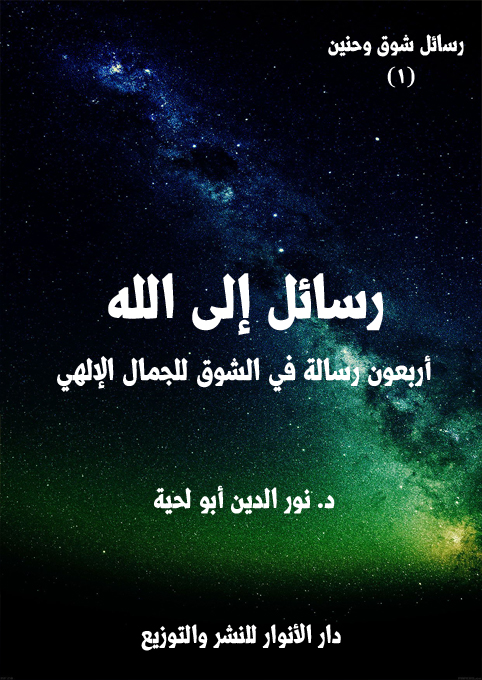
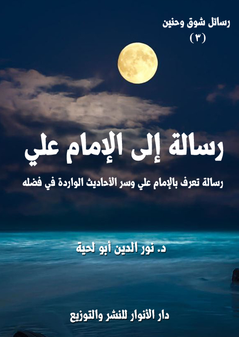
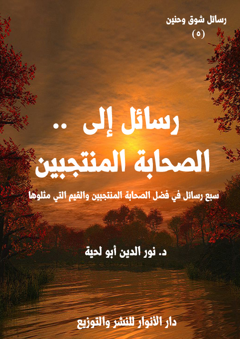

الكتاب: رسائل إلى الله
الوصف: أربعون رسالة في الشوق للجمال الإلهي
السلسلة: رسائل شوق وحنين
المؤلف: أ.د. نور الدين أبو لحية
الناشر: دار الأنوار للنشر والتوزيع
الطبعة: الأولى، 1440 هـ
عدد الصفحات: 182
للمطالعة: هنا
لمطالعة الكتاب من تطبيق مؤلفاتي المجاني وهو أحسن وأيسر: هنا

التعريف بالكتاب
تحاول هذه الرسائل الموجهة للحضرة النورانية المقدسة أن تلغي كل الحجب والمسافات التي تربط بين العبد وربه.. لتصل العبد بربه مباشرة عبر مناجاته والحديث معه وبثه أشواقه ومطالبه، وفي جميع الشؤون.
وهي تختصر في مضامينها أكثر القضايا العقدية والعرفانية الواردة في المصادر المقدسة أو التراث الإسلامي، وبصياغة رقيقة بعيدة عن المصطلحات الصعبة، أو الجدل، أو غيرها من الأساليب التي اضطر الفلاسفة أو المتكلمون إليها.
وهي تحاول كذلك أن تجادل عن تلك المعاني السامية، ولكن بطريقة حسنة بعيدة عن الشغب، والمراء الذي نهينا عنه.
فهي تخاطب العقل.. وتحاول أن تقنعه من خلال البديهيات التي يسلم لها.. ثم تنتقل مباشرة من العقل لتبث في القلب كل ألوان العواطف والمشاعر المرتبطة بتلك المعاني السامية.
الكتاب: رسائل إلى رسول الله
الوصف: أربعون رسالة في الشوق للجمال المحمدي
السلسلة: رسائل شوق وحنين
المؤلف: أ.د. نور الدين أبو لحية
الناشر: دار الأنوار للنشر والتوزيع
الطبعة: الأولى، 1440 هـ
عدد الصفحات: 358
للمطالعة: هنا
لمطالعة الكتاب من تطبيق مؤلفاتي المجاني وهو أحسن وأيسر: هنا

التعريف بالكتاب
تهدف هذه الرسائل إلى ثلاثة أهداف كبرى:
أولا ـ بيان كمالات رسول الله صلى الله عليه وآله وسلم في المجالات المختلفة، فالحب لا يكون إلا بعد إدراك الكمال.
ثانيا ـ رد الشبهات والتحريفات عن رسول الله صلى الله عليه وآله وسلم، ذلك أنها تتنافى مع الكمال، وقد تسيء إليه، وقد تكون هي الحجاب الذي يحول بين القلب وبين المحبة.
ثالثا ـ التوسل برسول الله صلى الله عليه وآله وسلم لتحقيق ما يرتبط بالكمال من سلوك وأخلاق وغيرها، وقد جعلنا ذلك في خاتمة كل رسالة، مثلما يقدم للدعاء بالثناء على الله، ثم يختم بطلب الحاجات.
ولم يكن هدفنا من التوسل طلب الحاجة فقط، وإنما كان هدفنا الأكبر منه تبيين الأثر السلوكي لمحبة رسول الله صلى الله عليه وآله وسلم في كل جانب من الجوانب، لأن العقيدة التي لا تثمر عملا عقيدة الكسالى والمدعين، لا المجدين والصادقين.
وقد جمعنا في هذه الرسائل أربعين صفة من صفات رسول الله صلى الله عليه وآله وسلم، وشرحناها، وبينا أدلتها المختلفة من خلال تلك الخطابات الموجهة إليه.
الكتاب: رسالة إلى الإمام علي
المؤلف: أ.د. نور الدين أبو لحية
الناشر: دار الأنوار للنشر والتوزيع
الطبعة: الأولى، 1438 هـ
عدد الصفحات: 235
للمطالعة: هنا
لمطالعة الكتاب من تطبيق مؤلفاتي المجاني وهو أحسن وأيسر: هنا

التعريف بالكتاب
تحاول هذه الرسالة ـ بحدود الطاقة ـ التعريف بجوانب مهمة من حياة وشخصية الإمام علي، باعتباره من الشخصيات التي حظيت بما لم يحظ بها غيرها من مناقب وفضائل في أحاديث كثيرة جدا اتفقت الأمة عليها، بل خصصت لها الكتب والرسائل من لدن فحول المحدثين المعتبرين لدى المدارس المختلفة.
وهي بذلك تحاول إثبات ما في تلك الأحاديث من دلائل صدق النبوة.. فالرسول صلى الله عليه وآله وسلم لم يكن ينطق عن الهوى، ولم يكن يجامل أحدا حينما كان يشيد بالإمام علي، ويذكر فضله، أو يدعو إلى توليه، أو يخبر أنه أخوه، أو أنه نفسه، أو أنه معه مثلما كان هارون من موسى، أو يعتبره دائرا مع الحق حيثما دار، أو أنه سلم لمن سالم، وحرب لمن حارب..
الكتاب: رسائل إلى القرابة المظلومة
الوصف: ردود علمية على الظالمين لأهل بيت النبوة
السلسلة: رسائل شوق وحنين
المؤلف: أ.د. نور الدين أبو لحية
الناشر: دار الأنوار للنشر والتوزيع
الطبعة: الأولى، 1440 هـ
عدد الصفحات: 180
للمطالعة: هنا
لمطالعة الكتاب من تطبيق مؤلفاتي المجاني وهو أحسن وأيسر: هنا

التعريف بالكتاب
هذا الكتاب زفرات ألم على المظالم التي تعرض لها أقارب رسول الله صلى الله عليه وآله وسلم ابتداء من أمه وأبيه، واللذين رميا بالشرك، وحكم عليهما بأنهما من أهل النار، بينما اعتبر جميع المشركين بمنجاة منها، لأنهم من من أهل الفترة.
وهو زفرات ألم في حق أبي طالب عم رسول الله صلى الله عليه وآله وسلم ذلك الذي فداه بكل شيء، وضحى في سبيله بكل ما يملك، لكنهم يذكرون أنه مات على الشرك، مع أنه لم يعرف الشرك في حياته، وآمن برسول الله صلى الله عليه وآله وسلم قبل أن يتنزل عليه ملاك الوحي.
وهو زفرات ألم في حق خديجة سيدة نساء العالمين تلك الطاهرة التي وضعها رسول الله صلى الله عليه وآله وسلم مع مريم وآسية وفاطمة في محل واحد.. والتي أخبر رسول الله صلى الله عليه وآله وسلم أنه لم يعوض بمثلها، ولا بمن يدانيها، ولكنا لا نكاد نسمع بها.
وهو زفرات ألم في حق الإمام الحسين وأصحابه في الطفوف.. والذي صار ذكرهم بدعة، والبكاء عليهم هرطقة.. والتغني بأعدائهم سنة.
وهو زفرات ألم في حق أولئك الأبطال المنسيين الذين كانوا أكبر من نصر الإسلام، وفدوه بأنفسهم، لكنهم أهملوا، ونسب الفضل لغيرهم.
وهو زفرات ألم في حق أولئك الثوار المضطهدين الذين قاموا لمواجهة الاستبداد والظلم وتحريف الدين، فقمعوا وقتلوا وعلقوا في الصلبان وامتلأت بهم السجون.
الكتاب: رسائل إلى الصحابة المنتجبين
الوصف: سبع رسائل في فضل الصحابة المنتجبين والقيم التي مثلوها
السلسلة: رسائل شوق وحنين
المؤلف: أ.د. نور الدين أبو لحية
الناشر: دار الأنوار للنشر والتوزيع
الطبعة: الأولى، 1440 هـ
عدد الصفحات: 264
للمطالعة: هنا
لمطالعة الكتاب من تطبيق مؤلفاتي المجاني وهو أحسن وأيسر: هنا

التعريف بالكتاب
هذا الكتاب محاولة لتعميق المحبة الحقيقية لأصحاب رسول الله صلى الله عليه وآله وسلم الذين وردت النصوص المقدسة بالثناء عليهم واعتبارهم نماذج شريفة للصحبة الحقيقية التي لم تبدل ولم تغير ولم تتأثر بذلك الواقع الجديد الذي حصل بعد رسول الله صلى الله عليه وآله وسلم نتيجة ما فتح الله على المسلمين من الدنيا.
وقد كان الأساس الأول لاختيارنا لهؤلاء الأصحاب ما ورد من الثناء عليهم، والذي اتفقت عليه جميع مدارس المسلمين، وخصوصا المدرستين الكبيرتين: السنة والشيعة، باعتبارهما الركنين الكبيرين للإسلام.
ولذلك استبعدنا كل من وقع فيه الخلاف بينهم، من أمثال أولئك الصحابة المختلقين الذين وضعهم سيف بن عمر، أو من أمثال أولئك الذين وضعت لهم الفئة الباغية الكثير من المناقب قصد الإضرار بالمخالفين لها، أو أولئك الصحابة الذي وقفوا أيام الفتنة مع الفئة الباغية مناصرين أو مؤيدين أو مقاتلين معها، وذلك بناء على اعتبار ذلك ثلمة كبيرة في وفائهم بعهودهم.